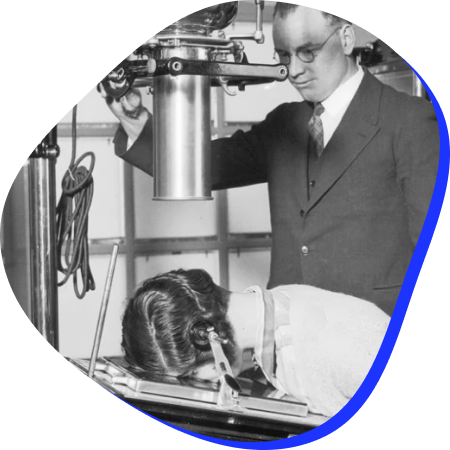

Próteses
600 a.C
As próteses ortopédicas mais antigas foram descobertas nas múmias de dois museus. Têm a forma de dedão do pé direito e são de aproximadamente 600 a.C. Provavelmente, eram utilizadas por pessoas amputadas e não foram colocadas apenas durante a mumificação, tendo sido feitas de madeira e couro. Hoje em dia, as próteses podem ser divididas em fixas ou removíveis e em totais ou parciais. Os materiais divergem entre os mais duradouros e os modelos entre os mais modernos, como os das Próteses Biônicas, que são dispositivos de última geração que funcionam através de sensores conectados ao músculo do paciente, ou seja, estes sensores captam os pulsos elétricos e isso possibilita uma maior mobilidade principalmente para amputados de membro superior.
Raio X
1895
O primeiro Raio X foi em 22 de dezembro de 1895. Naquele dia, Roentgen pôs a mão esquerda de sua esposa Anna Bertha na chapa de vidro, com filme fotográfico, assim inicio a radiação, por cerca de 20 minutos. Revelou o filme, lá estava para confirmação de suas observações, a imagem da mão esquerda da sua esposa e seus ossos dentro das partes moles menos densas. Atualmente, o Raio X é uma das principais medidas usadas em hospitais para a indicação de fraturas no corpo. E com o avanço tecnológico, os novos equipamentos de alta tecnologia podem realizar exames de alta qualidade e com baixa exposição para o paciente, não necessitando mais usar coletes de chumbo.
Vacinas
XVIII
Quando comprovadas cientificamente, há a certeza de que as vacinas vão salvar vidas ou fazer com que as pessoas doentes apresentem sintomas mais leves. Ter a tecnologia como parceira nessa produção ajuda bastante a controlar ou erradicar rapidamente as doenças. Edward Jenner descobriu a vacina antivariólica, a primeira de que se tem registro. Ele fez uma experiência comprovando que, ao inocular uma secreção de alguém com a doença em outra pessoa saudável, esta desenvolvia sintomas muito mais brandos e tornava-se imune à patologia em si, ou seja, ficava protegida. Diferente dessa época onde o estudo demorava muitos anos, atualmente, com o avanço da tecnologia, a identificação do RNA mensageiro é extremamente mais rápida pelos algoritmos. Tendo o exemplo mais recente, da pandemia de coronavírus, que provou a agilidade dos processadores atuais na fabricação dessas vacinas.
Mapeamento Genético
1900
As primeiras informações sobre o mapeamento do genoma humano datam da primeira década de 1900 e referem-se à descoberta de que determinados genes são transmitidos pelo cromossomo X. Este foi o primeiro cromossomo a ter um segmento de mapa delineado, em 1936 e 1937, por Haldane e Bell. Esses autores determinaram a distância genética entre os locos condicionadores da hemofilia e do daltonismo, anomalias então consideradas como etiologicamente simples, usando equipamentos relativamente simplórios. Na atualidade, quando falamos em mapeamento genético, estamos nos referindo a sequenciar e analisar o nosso genoma como um todo, sem um foco específico e sem a necessidade de escolher apenas um gene para estudo. E com a integração de dados é possível ter acesso a uma larga escala de informações sobre esses genes, simplificando os processos posteriores.
Triagem
1900
A triagem teve origem na I Guerra Mundial por parte dos médicos franceses que prestavam cuidados de emergência nos hospitais de campanha perto das frentes de batalha. Até muito recentemente, a triagem, quer fosse realizada por um paramédico ou outrem, era frequentemente baseada na intuição, em vez de responder por uma avaliação criteriosa e sistemática. A abordagem moderna é mais científica. O prognóstico categorização da vítima é frequentemente o resultado de avaliações fisiológicas. Alguns modelos de triagem, como o START, fazem uso de dados, podendo até ser calculados com a ajuda de algoritmos. À medida que os conceitos de triagem se tornam mais sofisticados, a sua gestão é cada vez mais auxiliada pelo aparecimento de software e hardware para uso tanto no hospital como no terreno
Big Data
2000
As soluções de Big Data podem reunir prontuários e informações de todos os pacientes. Como benefício, a integração de dados facilita pesquisas mais assertivas sobre a saúde populacional, dentre elas, permitir que o gestor encontre agrupamentos relacionados a problemas de saúde e condições sanitárias precárias, por exemplo, além de propor ações preventivas que evitam não só epidemias, como alocam recursos efetivos para melhorar a qualidade de vida da população em diversas áreas. Diferente de quando o sistema não era integrado e isso refletia em inúmeras falhas no acompanhamento populacional sobre vacinas, infecções e demais exemplos. Com acesso a esse acompanhamento, a facilitação na junção de dados se tornou um enorme avanço para a sociedade.
Estudos dos medicamentos
2000
A descoberta dos medicamentos passou por fases ao longo do tempo. Inicialmente eram recolhidos da natureza de forma intuitiva. Posteriormente, o princípio ativo das plantas medicinais foi extraído para uma utilização empírica. E foi com a industrialização que os medicamentos passaram a ter um uso racional. Um dos primeiros medicamentos industrializados foi a aspirina, descoberta em 1898 por Félix Hoffman, mas foi a partir dos anos 2000 que as pesquisas evoluíram exponencialmente. Hoje em dia, uma parte muito grande da pesquisa clínica feita no mundo é feita pela indústria farmacêutica. O que significa que os estudos dos medicamentos se tornou algo tão necessário para a medicina atual, que o seu impacto interfere nas demais áreas. No Brasil, Atualmente, cerca de 8.805 estudos são realizados no país,
Inteligência Artificial
2000
Em 2011, a IBM concebeu o supercomputador Watson, fruto de tecnologia que usa redes neurais artificiais para armazenar e comparar dados médicos. A máquina já assimilou milhões de informações em formato de livros, artigos científicos e prontuários de pacientes, tornando-se uma rede de dados sobre oncologia. Hoje, as técnicas de inteligência artificial empregadas na medicina possuem aplicações diversas, auxiliando na conduta do médico. O impacto dessa tecnologia garante diagnósticos mais precisos e tratamentos mais eficientes. Inteligência artificial é um conceito que remete à atribuição de determinadas ações, antes desempenhadas pelos humanos, às máquinas. Na prática, a inteligência artificial faz uso de sistemas informatizados e símbolos computacionais para imitar o comportamento humano. A aplicação de inteligência artificial na medicina já é uma realidade nas instituições de saúde e na conduta médica. Os algoritmos são capazes de analisar dados e auxiliar no diagnóstico de doenças e na recomendação de futuros tratamentos.
Telemedicina
Atualmente
A telemedicina é utilizada tanto para prevenção, quanto para diagnósticos, acompanhamento, tratamento de doenças e lesões, e outras coisas. Tudo realizado a distância, sem contato entre médico e paciente. E desde o seu surgimento, essa área médica, que envolve o atendimento do paciente de maneira remota, tem contribuído para avanços significativos, tornando a saúde acessível a qualquer hora e em qualquer lugar, representando o exercício da medicina através de metodologias interativas de comunicação audiovisual e dados, com o objetivo de assistência à educação e pesquisa em saúde. Durante a pandemia da covid-19 a telemedicina teve um aumento gigantesco, visto que evita o contato entre pessoas, diminuindo extremamente a chance de propagação da doença. De acordo com dados da Conexa (startup que oferece serviços de telemedicina para operadoras de saúde) divulgados pelo site da Exame: De janeiro a agosto de 2020, foram realizadas mais de 1 milhão de consultas. Além disso, a população usuária de telemedicina subiu de 150.000 pessoas para 3,5 milhões no país. Promovendo o acesso à saúde para a população.